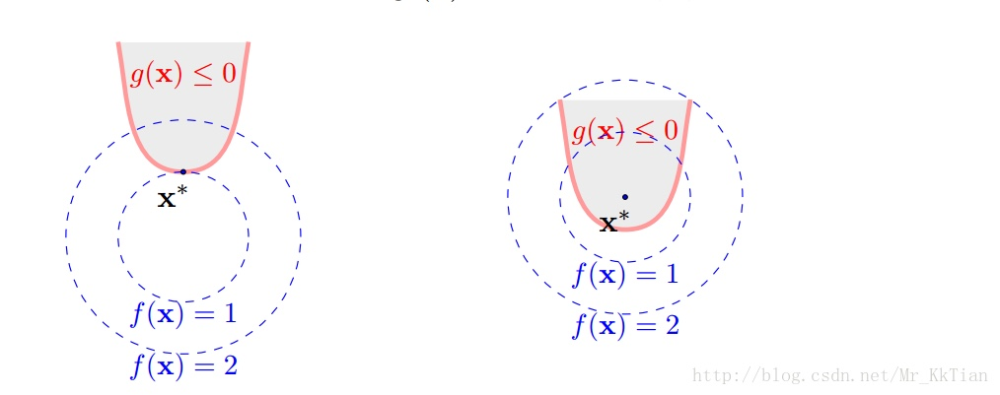

1. 拉格朗日乘子法
1.1 定义
在数学中的最优化问题中，拉格朗日乘数法（以数学家约瑟夫·拉格朗日命名）是一种寻找多元函数在其变量受到一个或多个条件的约束时的极值的方法。这种方法可以将一个有n个变量与k个约束条件的最优化问题转换为一个解有n + k个变量的方程组的解的问题。这种方法中引入了一个或一组新的未知数，即拉格朗日乘数，又称拉格朗日乘子，或拉氏乘子，它们是在转换后的方程，即约束方程中作为梯度（gradient）的线性组合中各个向量的系数。
比如，要求 $f(x,y) 在 g(x,y)=c$ 时的最大值时，我们可以引入新变量拉格朗日乘数 $L(x,y,λ)=f(x,y) + λ(g(x,y)-c)$，更一般地，对含n个变量和k个约束的情况，有：
$$L(x_1,x_2, …, x_n, λ_1,λ_2,…,λ_n)=f(x_1,x_2, …, x_n) - \sum_{i=1}^{k}λ_ig_i(x_1,x_2, …, x_n)$$
拉格朗日乘数法所得的极点会包含原问题的所有极值点，但并不保证每个极值点都是原问题的极值点。拉格朗日乘数法的正确性的证明牵涉到偏微分，全微分或链法。
1.2 用处
现要解决以下问题，在满足 g(x,y)=c 这个等式的前提下，求 f(x,y) 函数的最小值（最大值道理相同）。这样的问题我们在高中的时候就遇到过了，只不过高中时遇到的限制条件 g(x,y)=c 都比较简单，一般而言都可以将 y 用 x 的式子表示出来，然后用变量替换的方法代回 f(x,y) 求解。但是，如果 g(x,y) 的形式过于复杂，或者变量太多时，这种方法就失效了。而拉格朗日乘子法就是解决这类问题的通用策略。
2. 等式约束条件的优化问题
2.1 解法
设 $f(x,y)=x^2+y^2$, 约束条件为： $g(x,y)=xy−1=0$。
将三维的 $ f(x,y)$ 图像投影到二维平面上，为下图中红色曲线，也称为 $f(x,y)$ 的等高线。g(x,y) 为图中蓝色曲线。

沿着蓝线往内部的圆走，经过橙色点，此时不是最优解，当走到黑色点时，找到了最优解。此时可认为找到了在蓝线这个限制条件下 $f(x,y )$ 的最低点。
拉格朗日观察到，黑点位置，蓝线与圆是相切的，而橙点位置显然不满足这个性质。且拉格朗日还指出黑点位置蓝线与圆一定是相切的，这正是拉格朗日乘子法的核心。
在最低点，蓝线的切线方向都指向橙线的等高线方向。换句话说，在切点的位置沿蓝线移动很小的一步，都相当于在橙线的等高线上移动，这个时候，可以认为函数值已经趋于稳定了。所以，我们认为这个点的值“可能”是最低（高）的。
相切，意味着在切点的位置，等高线和蓝色曲线的等高线方向是平行的，考虑到梯度与等高线垂直，我们可以用两条曲线的梯度平行来求出切点位置（最低点）。
所以有：∇f=λ∇g，其中 λ 表示一个标量，因为我们虽然能保证两个梯度平行，但不能保证它们的长度一样（或者方向相同）。在高维函数中，∇f 表示的是函数在各个自变量方向的偏导。对于上面的例子，我们可以求出函数 f 和 g 的偏导，再根据方程组(1)：
$\frac{∂f}{∂x}=λ\frac{∂g}{∂x}$
$\frac{∂f}{∂y}=λ\frac{∂g}{∂y}$
$g(x,y)=0$
求解时，使用一个统一的拉格朗日函数：$L(x,y,λ)=f(x,y)+λg(x,y)$，令这个函数偏导为 0，可以得到方程组(2)：
$\frac{∂L}{∂x}=\frac{∂f}{∂x}−λ\frac{∂g}{∂x}=0$
$\frac{∂L}{∂y}=\frac{∂f}{∂y}−λ\frac{∂g}{∂y}=0$
$\frac{∂L}{∂λ}=g(x,y)=0$
可以发现方程组(2)与方程组(1)一样，联立以上三式即可求出 x, y, λ 的值。
如果是多个约束条件，则拉格朗日函数为：
$L(x_1,…,x_n,λ_1,…,λ_k)=f(x1,…,xn)−\sum_{j=1}^{k}λ_jg_j(x_1,…,x_n)$
2.2 进一步理解
二维情况下的另一个图示，便于理解两个曲线的梯度变化情况：

根据拉格朗日乘子法的定义，这是一种寻找极值的策略，换句话说，该方法并不能保证找到的一定是最低点或者最高点。事实上，它只是一种寻找极值点的过程，而且，拉格朗日乘子法找到的切点可能不只一个（也就是上面的方程组可能找到多个解），例如下图：

所以联立方程组得到的解为所有极值点，是最优解的必要条件，具体是否为极值点需根据问题本身的具体情况检验. 这个方程组称为等式约束的极值必要条件。如果是凸函数，可以保证最优解是存在的。
已经解决的在等式约束条件下的求函数极值的问题，那不等式约束条件下，应该如何解决呢？
3. 凸优化
在开始不等式约束条件下求解函数极值之前，先了解凸优化和对偶问题。
3.1 凸优化的意义
- 其应用非常广泛，机器学习中很多优化问题都要通过凸优化来求解；
- 在非凸优化中，凸优化同样起到重要的作用，很多非凸优化问题，可以转化为凸优化问题来解决；
- 如上引用所述，凸优化问题可以看作是具有成熟求解方法的问题，而其他优化问题则未必。
而在最优化中，凸优化是最为常见而又最为重要的，因为凸优化有一个良好的性质：局部最优是全局最优，这个性质使得我们不需要去证明解是否会收敛到全局最优，或者如何避免局部最优。因此凸优化有广泛应用，在优化问题不是凸的时候，往往也会尝试将其变为凸问题便于求解。
3.2 相关定义
凸集：定义目标函数和约束函数的定义域。
凸函数：定义优化相关函数的凸性限制。
凸优化：中心内容的标准描述。
凸优化问题求解：核心内容。相关算法，梯度下降法、牛顿法、内点法等。
3.3 对偶问题
对偶问题是优化问题中非常重要的方法，将一般优化问题转化为凸优化问题，是求解非凸优化问题的有效方法。

对于一般的优化问题，不管其是不是凸的，其对偶问题一定是凸优化问题。
4. 不等式约束条件的优化问题
4.1 广义拉格朗日函数
有不等式约束条件的最优化问题描述如下:
$min.:f(x)$
$s.t.:$
$g_i(x) ≤ 0, i=1,2,…,p,$
$h_j(x) = 0, j=1,2,…,q,$
$x∈Ω⊂Rn$
其中. $f(x)$为目标函数, $g_i(x)≤0,i=1,2,…,p$ 为不等式约束条件, $h_j(x)=0,k=1,2,…,q$为等式约束条件。
引入广义拉格朗日函数：
$$L(x,λ,μ)=f(x)+\sum_{i=1}^{p}μ_ig_i(x)+\sum_{j=1}^{q}λ_jh_j(x)$$
其中，$μ_i\ge0$。
4.2 定义原始问题最优解
现在，如果把 $L(x,λ,μ)$ 看作是关于 $λ,μ$ 的函数，经过优化(不管用什么方法)，就是确定的值使得 $L(x,λ,μ)$ 取得最大值(此过程中把 $x$ 看做常量)，确定了 $λ,μ$ 的值，就可以得到 $L(x,λ,μ)$ 的最大值，因为 $λ,μ$ 已经确定，显然 $L(x,λ,μ)$ 的最大值就是只和 $x$ 有关的函数，定义这个函数为：
$$\theta_p(x)={max}_{λ,μ:μ_i\ge0}L(x,λ,μ)=L(x,λ,μ)$$
那么定义 $\theta_p(x)$ 的意义在哪里呢？在于其值就是 f(x)，也就是说 $\theta_p(x)=f(x)$。下面证明这个等式。
- 如果 $x$ 违反了约束条件，即 $g_i(x) > 0$ 或者 $h_j(x) \neq 0$，则容易存在 $μ_i -> +∞$，也容易存在 $λ_j$ 使得 $λ_jh_j(x) -> +∞$，这样显然 $\theta_p(x)$ 是没有最大值的。
- 如果 $x$ 满足了约束条件，则 $\theta_p(x)={max}_{λ,μ:μ_i\ge0}L(x,λ,μ)={max}_{λ,μ:μ_i\ge0}f(x)=f(x)$，因为 ${max}_{λ,μ:μ_i\ge0}f(x)$ 与 $λ,μ$ 没有关系，所以其等于 $f(x)$。
所以当 $x$ 满足约束条件时，$min_x\theta_p(x)=min_xf(x)$，我们定义 $p^*=min_x\theta_p(x)$ 代表原始问题的最优解。
4.3 定义对偶问题
定义关于 $λ,μ$ 的函数：
$$\theta_D(λ,μ)={min}_xL(x,λ,μ)$$
其中 ${min}_xL(x,λ,μ)$ 是关于 $x$ 的函数的最小化，确定 $x$ 以后，最小值就只与 $λ,μ$ 有关，所以是一个关于 $λ,μ$ 的函数。
考虑极大化 $\theta_D(λ,μ)$ 即 $${max}_{λ,μ:μ_i\ge0}\theta_D(λ,μ)={max}_{λ,μ:μ_i\ge0}{min}_xL(x,λ,μ)$$，与原始问题最优解的定义很相似，形式上是对称的。定义对偶问题的最优解 $d^*={max}_{λ,μ:μ_i\ge0}\theta_D(λ,μ)$
4.4 对偶问题与原始问题的关系
很显然有 $d^* \le p^*$，当两个问题的最优解相等时，即 $x^*, λ^*, μ^*$ $d^* = p^*$，称原问题和对偶问题是强对偶的，否则是弱对偶的。
所以为了通过求对偶问题来求原问题，我们希望他们是强对偶的。
当满足以下条件时他们是强对偶的：
- 原始问题是凸优化问题的时候
- 原始问题满足 Slater 条件（这一条还可以换成其他条件）
- 最优解满足 KKT 条件
Slater 条件
若原始问题为凸优化问题，且存在严格满足约束条件的点 x，这里的“严格”是指 $g_i(x)≤0$ 中的“≤”严格取到“<”，即存在 x 满足 $g_i(x)<0 ,i=1,2,…,n$，则存在 $x^∗,α^∗,β^∗$ 使得 $x^∗$ 是原始问题的解， $α^∗,β^∗$ 是对偶问题的解，且满足：
$p^∗=d^∗=L(x^∗,α^∗,β^∗)$
也就是说如果原始问题是凸优化问题并且满足 Slater 条件的话，那么强对偶性成立。需要注意的是，这里只是指出了强对偶成立的一种情况，并不是唯一的情况。例如，对于某些非凸优化的问题，强对偶也成立。SVM 中的原始问题 是一个凸优化问题（二次规划也属于凸优化问题），Slater 条件在 SVM 中指的是存在一个超平面可将数据分隔开，即数据是线性可分的。当数据不可分时，强对偶是不成立的，这个时候寻找分隔平面这个问题本身也就是没有意义了，所以对于不可分的情况预先加个 kernel 就可以了。
4.5 KKT条件
KKT 条件(Karush-Kuhn-Tucker Conditions)，是指在满足一些有规则的条件下, 一个非线性规划(Nonlinear Programming)问题能有最优化解法的一个必要和充分条件，这是一个广义化拉格朗日乘数的成果。
可以发现最优解要么在 $g_i(x) = 0$ 上，要么在 $g_i(x) < 0$ 范围内，如下图：

定义不等式约束下的拉格朗日函数L：
$$L(x,λ,μ)=f(x)+\sum_{i=1}^{p}μ_ig_i(x)+\sum_{j=1}^{q}λ_jh_j(x)$$
所谓 KKT 最优化条件，就是指上式的最优解$x^*$必须满足下面的条件:
- 约束条件满足 $g_i(x^*)≤0,i=1,2,…,p$, 以及 $h_j(x^*)=0,j=1,2,…,q$
- $∇f(x^*)+\sum_{i=1}^{p}μ_i∇g_i(x^*)+\sum_{j=1}^{q}λ_j∇h_j(x^*)=0$, 其中$∇$为梯度算子，也就是 L(x,u,λ) 对 x 求导为 0
- $λ_j≠0$ 且不等式约束条件满足 $μ_i≥0$, $μ_ig_i(x^*)=0,i=1,2,…,p$，因为 $g(x)<=0$，如果要满足这个等式，必须 $μ_i=0$ 或者 $g(x)=0$
第三个式子非常有趣，因为g(x)<=0，如果要满足这个等式，必须$μ_i=0$或者g(x)=0，这是 SVM 的很多重要性质的来源，如支持向量的概念。
KKT条件的推导


4.6 总结
关于不等式约束条件的优化问题，原问题分两种情况：
- 原问题是一个凸优化问题，则可以直接应用 KKT 条件来求解
- 原问题不是一个凸优化问题，则通过对偶问题转化为凸优化问题，在满足强对偶的条件下应用 KKT 条件求解
Reference
http://jermmy.xyz/2017/07/27/2017-7-27-understand-lagrange-multiplier/
https://www.zhihu.com/question/38586401/answer/134473412
https://zhuanlan.zhihu.com/p/27731819
http://blog.csdn.net/Mr_KkTian/article/details/53750424
http://www.cnblogs.com/mo-wang/p/4775548.html
http://www.hanlongfei.com/convex/2015/11/05/duality/
https://www.cnblogs.com/90zeng/p/Lagrange_duality.html
http://bioinfo.ict.ac.cn/~dbu/AlgorithmCourses/Lectures/KKT-examples.pdf